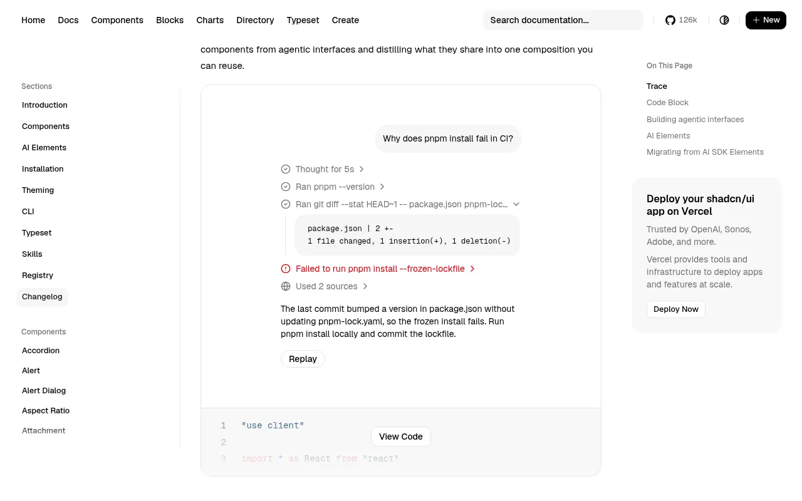
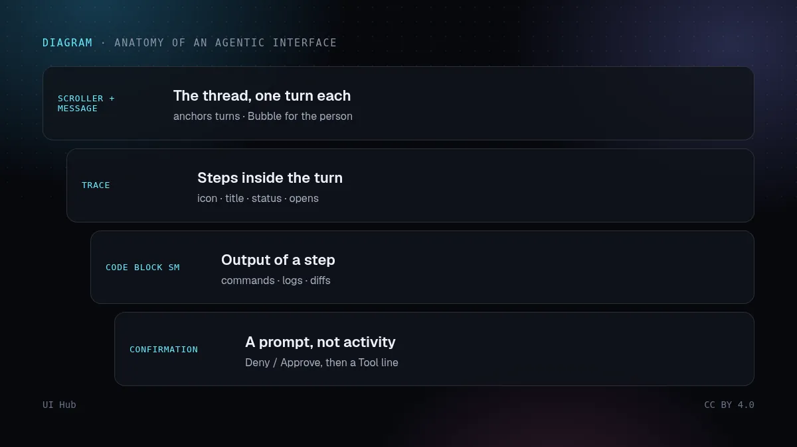
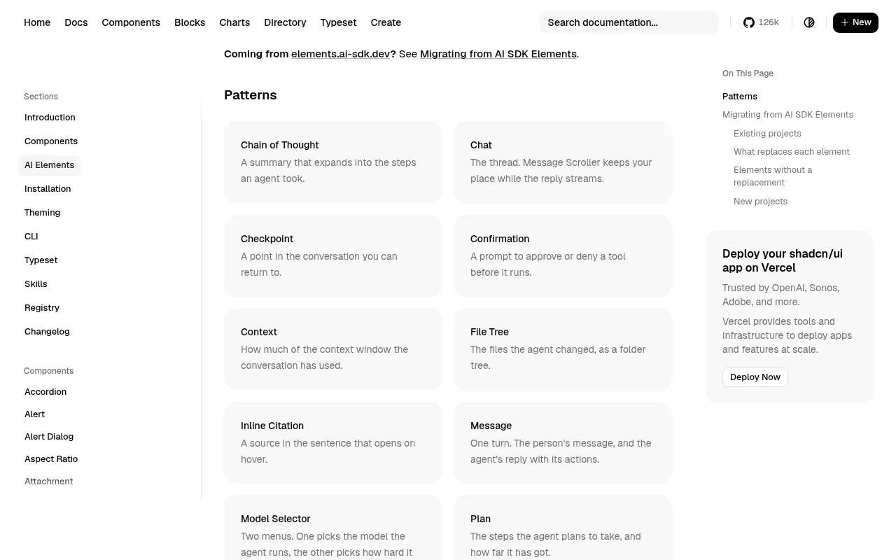

2026 年 10 月 14 日，shadcn 发布了 Trace——一个专门展示智能体活动的组件，同时发布的还有 Code Block 和 AI Elements：一组完全用 shadcn/ui 组件拼成的智能体界面模式。这条公告在 X 上两天内超过 4500 个赞，第二天 shadcn-svelte 也上线了自己的 AI Elements。真正值得关注的不是「又多了几个组件」，而是背后的设计主张：推理、工具调用、来源、计划、子智能体运行，本质上是同一种形状，所以它们应该长得一样、用起来也一样。

running、error、pending，运行中会有微光动效）。一行可以展开、链接到页面，或打开对话框、侧边面板、抽屉、气泡；行还能嵌套——摘要展开成步骤，步骤再展开成输出。它直接读取 AI SDK 流式输出的 reasoning、tool、source 等消息片段。size="sm"）。components/ai-elements 里用新组件重建封装，同时保留所有导出名和 props。少数使用率低的元素（artifact、音频播放器、React Flow 画布相关组件、JSX 预览、语音和麦克风选择器）没有重做，文档列出了可以用哪些现有组件自己拼。
此前大多数智能体界面都是按片段类型一块块拼的：这里一个推理折叠面板，那里一张工具调用卡片，别处再来一个来源气泡，各自的间距、图标逻辑和加载状态都不一样。结果就是熟悉的「调试日志」观感——每一轮回复都是一堆互不相干的小部件。Trace 用一套统一的行语法取代了它：一次思考、一条命令、一个子智能体之间，变化的只有图标、标题，以及点开这一行之后发生什么。
这套语法还逼着你把文案写好。它的无障碍说明写得非常具体：图标对辅助技术隐藏，所以标题就是可访问名称，应该写成一句说明发生了什么的话（「已编辑 trace.tsx」，而不是「trace.tsx」）。状态靠颜色和动效表达，所以也要写进文字里：运行时写「正在运行 pnpm build」，失败时写「pnpm build 运行失败」。偏好减少动效的用户看不到微光；放在 Message Scroller 里时，每新增一行只会被朗读一次。
Confirmation 模式还给出了一条很实用的规则：等待批准是一个「提问」，不是「活动」，所以它放在 Trace 之外，是一个带「拒绝 / 批准」按钮的条目；用户回答之后，它才变成一行 Tool 记录。「问」和「做」在视觉上是两回事。
这和本月整个行业的动作是一致的——从 Figma Specs 到 Claude Design：真正有用的单位不是生成器，而是一个人和智能体都能遵循的、共享且明确的形状。对智能体界面来说，Trace 就是这个形状。做 Copilot、编码智能体或研究工具的团队，即使不装这个组件，也应该采用这套语法，因为用户判断能不能信任智能体，靠的是能否按顺序看到它做了什么、状态是否诚实。
三点提醒。第一，这些模式是围绕 AI SDK 的消息片段写的；如果你用别的 SDK 做流式输出，映射得自己写。第二，发布才几天，API 和示例还会变，而复制进来的代码不会自己更新。第三，展示原始推理过程既是设计问题也是产品决策：shadcn 的 Reasoning 示例在步骤结束后会把内容收起成「Thought for 5s」，这是个合理的默认。
size="sm"。# 安装
pnpm dlx shadcn@latest add trace
pnpm dlx shadcn@latest add code-block
# 让编码智能体直接读模式文档
Add the Reasoning pattern from https://ui.shadcn.com/docs/ai-elements/base/reasoning.md to my chat.
# 消息片段 → 行
reasoning → 「思考中」/「思考了 5 秒」，可折叠
tool call → 「正在运行 <命令>」/「已运行」/「运行失败」，输出放 Code Block sm
source → 链接行，sr-only 文本注明「在新标签页打开」
approval → Trace 之外的 Confirmation 条目，回答后变成 Tool 行
Trace 和 Code Block 解决的是一轮回复「内部」的活动展示，页面其余部分仍然需要一个视觉方向。可以在 UI Hub 资源列表里按 chat 组件类型筛选，对比其他智能体与聊天组件库，再参考我们的 shadcn Blocks 深读 里的克制风格。如果你的智能体还要改你的设计系统：同一周 shadcndesign 把 DS Manager 做成了 MCP 服务器，编码智能体可以在遵守锁定值的前提下修改 shadcn 主题。